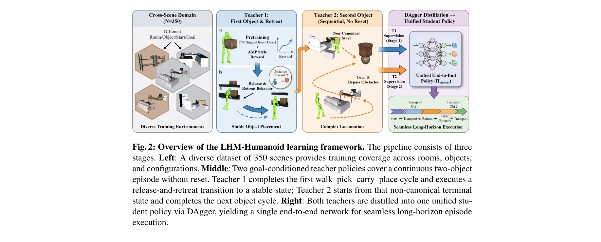

Essence

Fig. 1: Overview of LHM-Humanoid. Our system solves long-horizon loco-manipulation tasks
LHM-Humanoid는 다양한 혼란스러운 환경에서 장시간 인간형 로봇이 복수 객체를 반복적으로 집기, 운반, 배치하는 작업을 단일 통합 정책으로 수행하는 벤치마크와 학습 프레임워크를 제시한다.
저자: Haozhuo Zhang, Jingkai Sun, Michele Caprio, Jian Tang, Shanghang Zhang, Qiang Zhang, Wei Pan | 날짜: 2026-03-05 | DOI: 10.48550/arXiv.2508.16943
Fig. 1: Overview of LHM-Humanoid. Our system solves long-horizon loco-manipulation tasks
LHM-Humanoid는 다양한 혼란스러운 환경에서 장시간 인간형 로봇이 복수 객체를 반복적으로 집기, 운반, 배치하는 작업을 단일 통합 정책으로 수행하는 벤치마크와 학습 프레임워크를 제시한다.
Fig. 1: Overview of LHM-Humanoid. Our system solves long-horizon loco-manipulation tasks

Fig. 2: Overview of the LHM-Humanoid learning framework. The pipeline consists of three
총평: 본 논문은 장시간 혼란스러운 환경에서의 인간형 로봇 로코-조작이라는 도전적인 새로운 문제를 정의하고 이중 교사 증류 프레임워크로 효과적으로 해결하며, 350개 다양한 장면의 종합 벤치마크를 제공하여 로봇 일반화 연구에 의미 있는 기여를 한다.